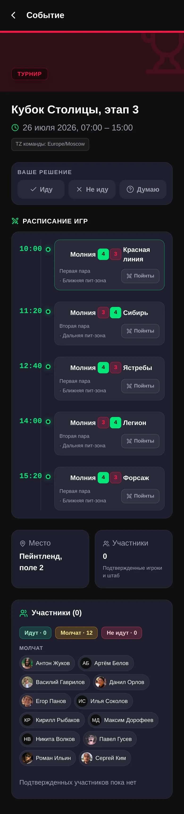
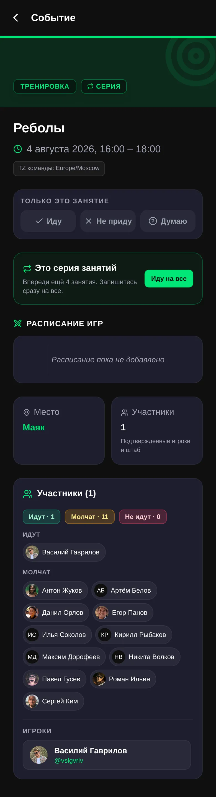
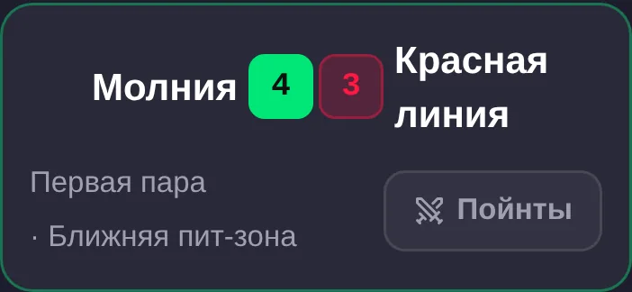
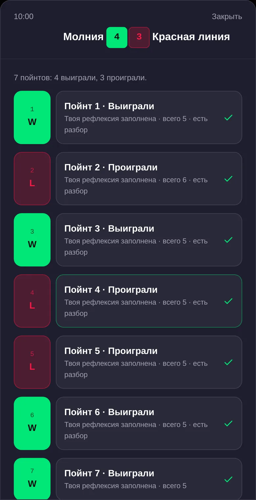
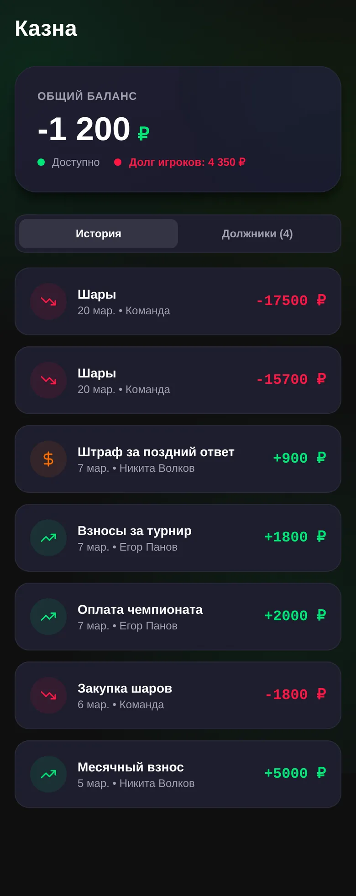
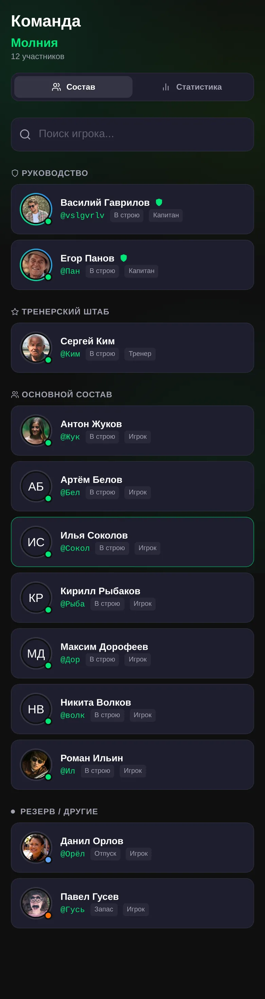

1Что ведёт капитан
Капитан отвечает за расписание команды, результаты игр, разбор, казну и состав. Действия игрока или тренера не заменяют капитанское управление.
2Создать событие или серию
Откройте создание события, выберите подходящий тип, укажите время и место, затем сохраните. Если одно и то же событие повторяется, создайте серию, чтобы участники отвечали в одном контексте.

- Создайте событие или серию.
- Проверьте время, место и тип.
- Откройте экран события, чтобы отслеживать ответы команды.
3Управлять явкой и событием
На экране события прочитайте ответы и статусы участников. Если планы меняются, отредактируйте событие или серию там же — команда увидит актуальный контекст.

4Внести счёт игры и разметить пойнты
В строке игры внесите результат строго в формате наши : соперник: наша команда всегда слева. После этого разметьте пойнты по порядку как W или L.


- Пойнты ещё не размечены — вернитесь к порядку игры.
- Разметка совпадает со счётом — число W и L сходится с результатом.
- Разметка не совпадает со счётом — проверьте W/L и счёт игры.
5Сделать разбор
Откройте нужный пойнт или событие и добавьте капитанский разбор. Фиксируйте решение и действие команды: что сработало, что изменить в следующем пойнте. Разбор нужен для следующего шага, а не для поиска виноватых.
6Посмотреть визуальный разбор события
Читайте визуальный разбор как три вопроса: кольца показывают, где группируются действия; матрица зона × фаза — где и когда они происходят; вафля — долю и распределение наблюдений.
7Вести казну
Финансовый порядок неизменен: event → expenses → collection. Сначала создайте событие, затем внесите расходы; сбор формируется из расходов.

- Добавляйте расходы и сборы в контексте события.
- Проверяйте должников и историю операций.
- Применяйте штрафы как капитанское действие.
8Вести состав
Приглашайте участников через Telegram, назначайте роли и обновляйте статусы состава. Это капитанские элементы управления.

- Создайте приглашение Telegram.
- Назначьте роль участнику.
- Актуализируйте статус состава.